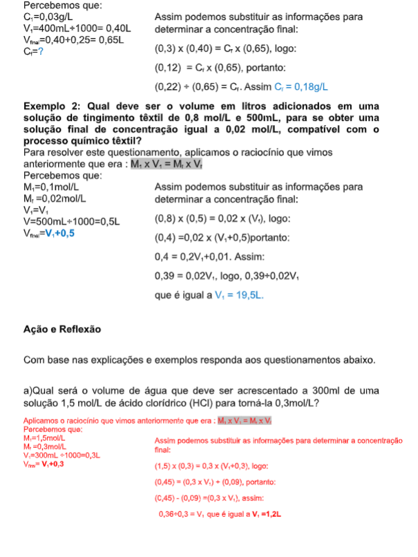
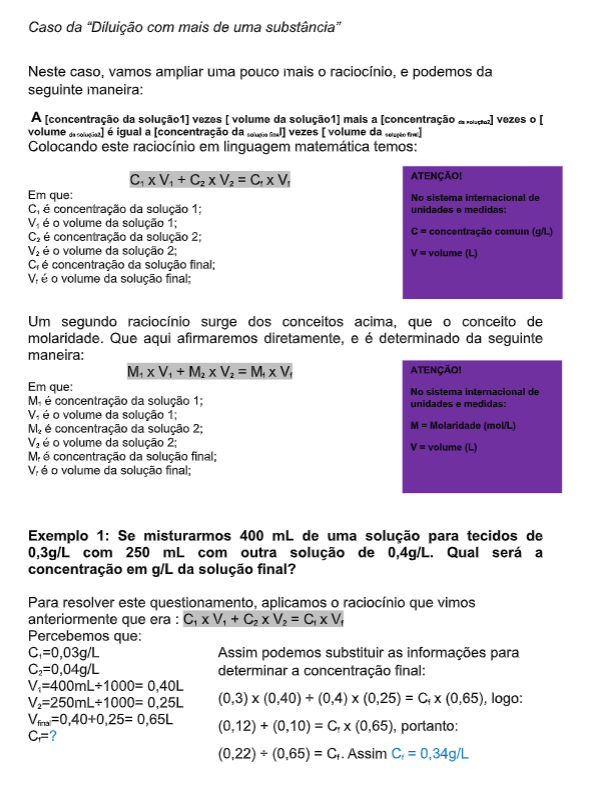
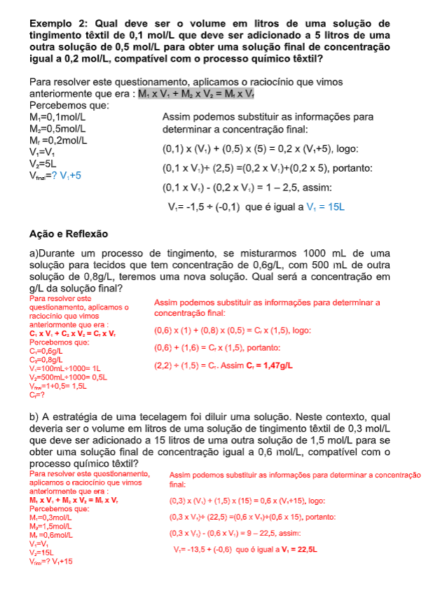
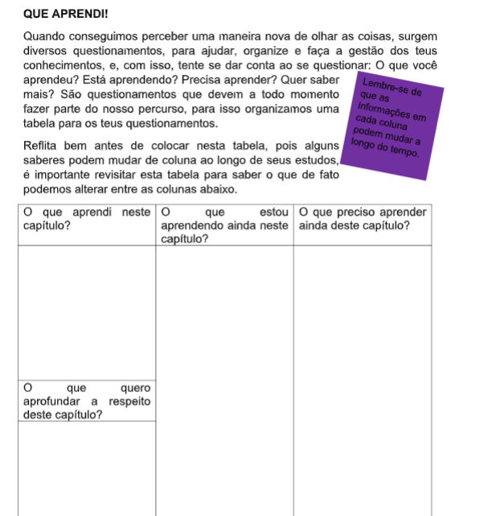
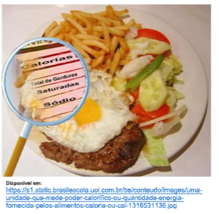
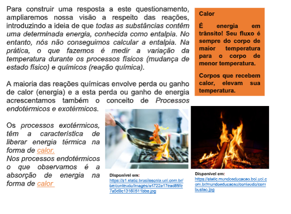
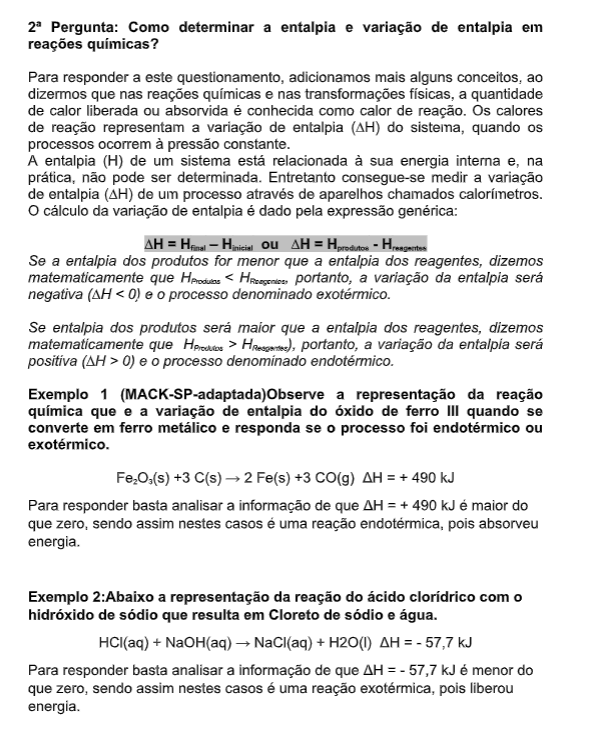
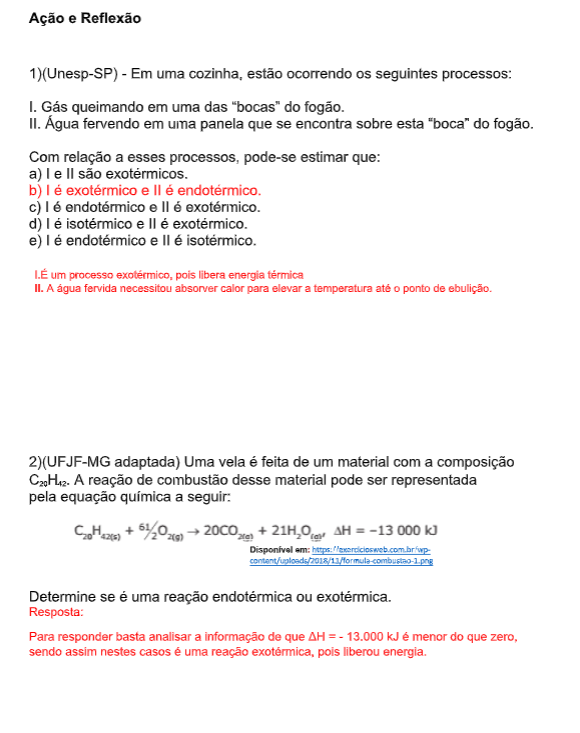
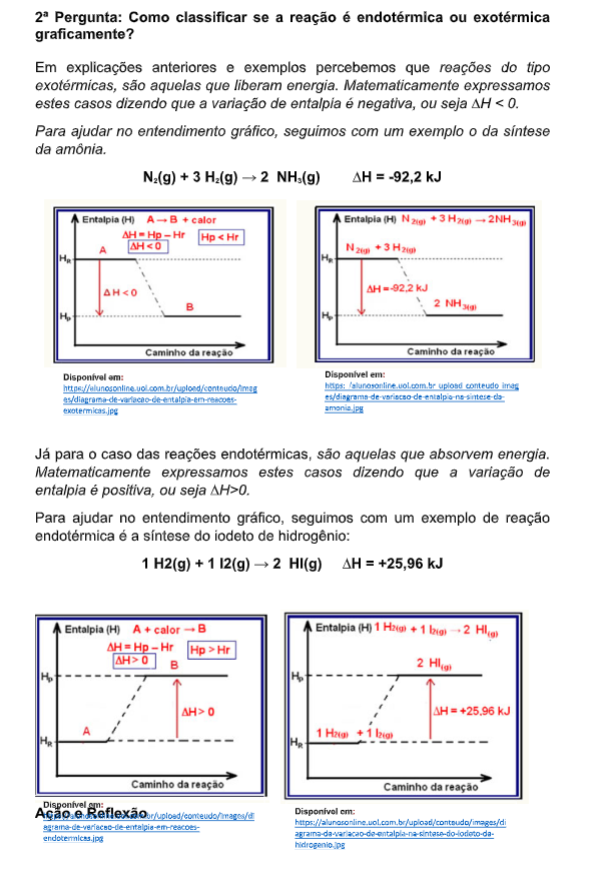
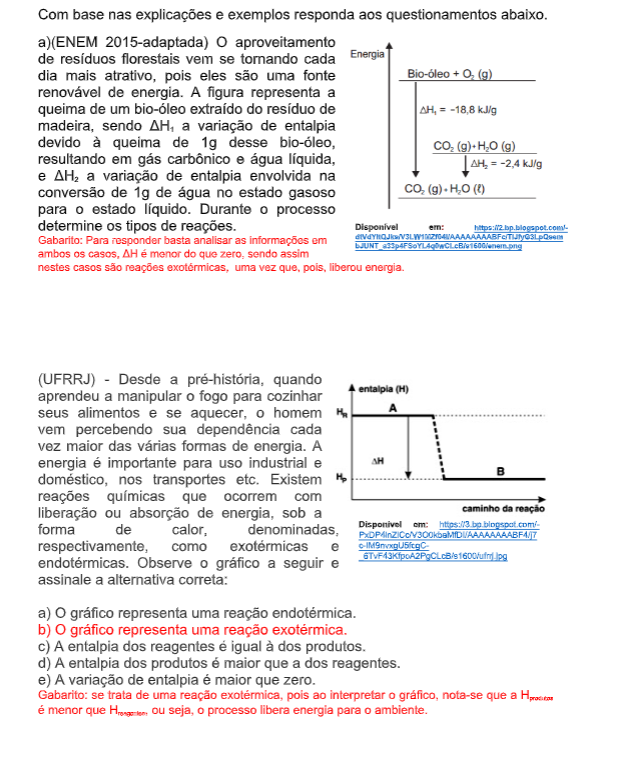

Capítulo 3
Setor coureiro calçadista e os processos orgânicos e inorgânicos
Quais substâncias estão envolvidas no processo de curtimento? Que características apresentam estas substâncias? Mas como podemos diferenciá- los?
CONTEXTUALIZANDOO couro constitui a pele do animal preservada da putrefação e apresenta uma textura extremamente rica de fibras colágenas, que deverão passar pelos diferentes estágios de transformação para se tornar flexível e macio. O couro pode ser definido como um subproduto animal que, após sofrer o processo de curtimento, não e mais passível de sofrer o ataque de microrganismos decompositores. As civilizações antigas já conheciam técnicas de preparação e curtimento de peles e couros. Existem registros do uso de couros para confecção de sandálias no Antigo Egito, Pérsia, China e durante o império romano. Hoje a indústria do couro emprega alta tecnologia, e começa a adotar práticas de produção que levam em conta a preservação do meio ambiente. 
(Re)construindo conceitosNo cotidiano do setor coureiro desde o ato de produção até a fase de higienização do produto final, muitas substâncias estão envolvidas, existe um conjunto de substâncias que se diferenciam devido suas características, e neste capítulo estudaremos as características delas. Basearemos nossas atividades em questionamentos.
1ª Pergunta: Como diferenciar as substâncias?Para responder a este questionamento, devemos separá-la em duas categorias amplas: as substâncias inorgânicas e as orgânicas. A diferenciação entre compostos orgânicos e os inorgânicos é realizada, principalmente, com base na presença de átomos de carbono (C) como elemento químico principal de um composto e pela capacidade de formar cadeias carbônicas curtas ou longas. Estas características que estão presente em qualquer substância orgânica. Já as substâncias inorgânicas além de não possuírem essas características, são divididas em quatro grupos conhecidos como função ácidos, função base, sais inorgânicos e óxidos. Além disso estas substâncias apresentam comportamentos diferentes referentes a condutividade elétrica, a solubilidade, as temperaturas de fusão e ebulição, que estão diretamente relacionadas com os tipos de ligações que cada composto apresenta.
2ª Pergunta: Quais as características gerais das substâncias inorgânicas?Para formular uma resposta a esta pergunta ampliamos um pouco nosso conhecimento quando dizemos que a química inorgânica compreende seu estudo nas estruturas, propriedades e comportamentos, reações de elementos, por exemplo misturas em soluções e compostos químicos que não contêm ligações carbono-hidrogênio. Consideramos como inorgânicos os metais, sais inorgânicos por exemplo. Estes compostos inorgânicos são utilizados como catalisadores, pigmentos, tintas, tensoativos, medicamentos, combustíveis e diversas aplicações. Devido a suas propriedades como pontos de fusão elevados e condutividade elétrica alta ou baixa, estes se tornam úteis para aplicações específicas. No processo de curtimento do couro, os produtos inorgânicos mais utilizados como curtentes são os sais de crômio, de zircônio, de alumínio e de ferro.
3ª Pergunta: Como classificar as substâncias inorgânicas chamadas de ácidas?Para você compreender a formação destes, vamos investigar a respeito dos compostos inorgânicos. Começaremos com os ácidos, eles São compostos que reagem com água (sofrem ionização), formando soluções que apresentam como único cátion o hidrônio, H 3 O + , ou o cátion H + . Como toda e qualquer equação química, a equação de ionização de um ácido deve apresentar reagentes, seta e produtos:
Reagentes → Produtos

4ª Pergunta: Nas substâncias inorgânicas existem somente os ácidos?



 SAIBA MAIS!
Industrialmente existem cinco tipos de curtimento em que o couro pode ser submetido. Curtimento Mineral (inorgânico): o curtimento inorgânico mais comum é realizado com sais de cromo trivalente. (Cromo III). Uma peça de couro pode ser denominada “wetblue” quando curtido unicamente com sais de cromo. Pelas características dos couros obtidos de elevada maciez, elasticidade, baixo peso específico, estabilidade à luz, toque, entre outras, estes couros são os mais empregados na fabricação de vestuários. Outro tipo de curtimento é o vegetal também conhecido como orgânico. Esta é mais comum e utiliza taninos vegetais, combinados ou não com taninos sintéticos, entre outros. Pelas características dos couros obtidos, de maior peso específico, menor estabilidade à lavagem, estes couros não são normalmente empregados para a fabricação de vestuário. Outras possibilidades de curtimento são: o Misto, realizados com produtos orgânicos sintéticos. O curtimento de preservação com engraxes superficiais, que não utiliza cromo. E o recurtimento que pode ser combinado através do emprego de curtentes orgânicos, inorgânicos ou de síntese (como por exemplo: derivados de melanina, fenol, acrílico e dicianodiamida) adequadamente aplicados. Ao observarmos as indicações das substâncias evolvidas nos tipos de curtimento, verificamos as nomenclaturas de substâncias Inorgânicas e orgânicas. Outra informação importante para nosso cotidiano é que para identificar a diferença entre o couro e um material sintético que tenta imitá-lo, fique atento! Aí vão algumas diferenças: características como a absorção de umidade, transpiração e regulagem de temperatura são propriedades naturais do couro. O material sintético é incapaz de reproduzir artificialmente estas propriedades.
